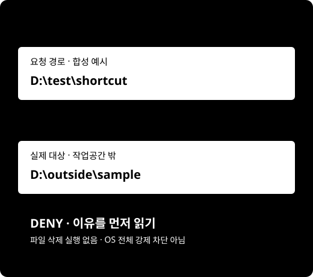

Windows RC4 · 무료 평가 안내
파일 작업 전,
실제 대상을
먼저 확인하세요.
요청한 경로와 연결된 실제 경로, 예상 파일 수와 크기, 정책 차단 이유를 확인하는 로컬 사전 검사기입니다.
Windows에서 Codex·Claude Code로 작업하는 평가자를 위한 도구입니다. 제출한 삭제 명령은 실행하지 않습니다.
Windows 평가 ZIP 받기로그인 없이 다운로드 · Windows 11 x64 · Python 포함
무료 평가/테스트 전용 · production·상업 운영권 없음

내려받는 파일을 확인하세요
arche-shield-0.1.0-rc4-eval3-portable-windows-x64.zip · 11,481,989 bytes · 배포 버전 0.1.0-rc4-eval3-portable
제품 내부 버전은 0.1.0입니다. GitHub의 자동 “Source code” ZIP은 실행 패키지가 아닙니다.
평가 ZIP SHA256
ed970e413db1453755553d0f4e335cc75f44f824c9b994cb7fa56e48e107e1af기존 Python 설치 사용자는 이전 eval2 패키지와 안내를 선택할 수 있습니다. 휴대용 평가판은 시스템 Python/PATH를 변경하지 않습니다.
첫 검사는 합성 파일로
실제 고객·업무 파일을 준비할 필요가 없습니다.
새 폴더에서 확인하고, 표시된 결과를 읽어 주세요.
ZIP 확인 후 새 폴더에 풀기
Windows 시작 메뉴 → PowerShell. 다운로드한 실제 경로로 아래 파일명을 바꿔 SHA256을 비교하세요. 다르면 실행을 멈춥니다.
Get-FileHash -Algorithm SHA256 -LiteralPath 'C:\다운로드폴더\arche-shield-0.1.0-rc4-eval3-portable-windows-x64.zip'탐색기 → ZIP 오른쪽 클릭 → 모두 압축 풀기. ZIP 안에서 직접 실행하지 마세요.
Windows와 패키지 확인
설정 → 시스템 → 정보에서 Windows 11과 x64 기반 프로세서를 확인하세요. ARM64·32비트는 이번 패키지 대상이 아닙니다. Python 3.13.16이 runtime 폴더에 포함되어 별도 설치가 필요 없습니다. VERIFY.cmd는 먼저 기본 Windows PowerShell로 파일 해시를 확인합니다. 관리자 권한이나 실행 정책 변경을 요구하지 않습니다.
압축 푼 폴더 주소를 복사한 뒤 다음 순서로 입력합니다.
cd /d "압축 푼 폴더 주소" VERIFY.cmd SHIELD.cmd --help SHIELD.cmd --version정상 결과:
verification: PASS, 사용법 표시, 제품 버전0.1.0.합성 데모 실행과 결과 읽기
TRY_DEMO.cmd정상 결과:
demo: PASS,synthetic_only: true,submitted_commands_executed: false. 새로운 demos 폴더의 합성 파일만 검사합니다. 파일과 검사 기록은 남깁니다.기본 정책의
C:\Users보호 DENY / 종료코드 2는 정상일 수 있습니다. reason을 읽고 시스템 보호를 낮추지 마세요. 데모의 테스트 정책은 다른 작업에 대한 사용 권한이 아닙니다.
지금 상태에 맞는 다음 한 걸음
아래 선택은 이 페이지 안에서만 사용합니다. 저장·전송하지 않으며 실제 설치 성공을 측정하지 않습니다.
결과가 예상과 다르다면
PORTABLE_RUNTIME_VERIFICATION_FAILED 또는 보안 정책 차단
파일 누락·변경 또는 기본 Windows PowerShell 실행 제한일 수 있습니다. 오류를 보존하고 새 폴더에서 checksum을 비교하세요. 보안 기능·실행 정책을 해제하거나 관리자 권한으로 우회하지 마세요. 차단이 계속되면 중지하고 정제된 오류만 접수하세요.
PACKAGE_HASH_MISMATCH 또는 checksum 불일치
실행을 멈추세요. 기존 폴더를 덮어쓰지 말고 공개 release에서 ZIP을 다시 받아 새 폴더에서 checksum을 비교합니다. 보안 설정을 끄거나 보호를 낮추지 마세요.
DENY, 종료코드 2 또는 Git UNKNOWN
DENY는 정책 판정입니다. 보호 폴더, workspace 밖 연결, 파일 수/크기 제한, Git 메타데이터 등을 reason에서 확인하세요. Git UNKNOWN은 허용으로 해석하지 않습니다. 실제 작업을 실행하지 마세요.
종료코드 3 또는 다른 오류
설정·검사기록·무결성 오류일 수 있습니다. 오류 코드와 버전을 보존하고 새 합성 파일로 재현해 평가 접수에 남깁니다. 고객 파일·개인 경로·토큰을 첨부하지 마세요.
평가 범위와 알려진 한계
무료 평가/테스트 전용
production 사용·상업 운영·재판매·재배포·white-label·팀용 상업 라이선스를 포함하지 않습니다. 7일은 시장검증 측정기간이며 소프트웨어 강제 만료가 아닙니다.
실제 고객 파일 대신 합성/테스트 작업공간만 사용하세요. 실제 사용자 복구·hooks·live provider는 활성화하지 않았습니다.
사전 검사 도구의 경계
OS 전체 강제 차단이 아니며 ALLOW도 명령 실행 권한이 아닙니다. 독립 RC4 보안감사 NOT_RUN, AUDIT016 INCOMPLETE. TOCTOU·휴리스틱·권한 의존 탐지 한계가 있습니다.
서명 없는 평가판이며 로컬 mock은 외부 신뢰가 아닙니다. 전체 DB+mock 동시 rollback 보호 및 완전 복구를 보장하지 않습니다. 배포 철회 후에도 캐시와 이미 받은 파일은 남을 수 있습니다.
첫 검사 뒤, 결과를 알려 주세요
설치 성공과 첫 검사 성공, 도움이 된 구체적 상황을 구분해 주세요. 다운로드를 사용자 성공이나 매출로 세지 않습니다.
선택형 평가 결과 남기기GitHub 로그인 필요 · 공개 issue에 개인정보/고객 파일/토큰 금지
지원 의향 입력은 구매·계약·결제가 아닙니다. 실제 결제는 비활성입니다.
상업·production·팀 사용범위 문의는 별도 Owner 검토 대상입니다.